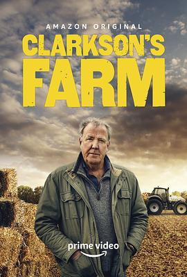

克拉克森的农场 第一季 / Clarkson's Farm Season 1
又名：我买了一个农场 / I Bought the Farm
作品信息
| 导演 | 加文·怀特海德 |
| 编剧 | 杰里米·克拉克森 |
| 主演 | 杰里米·克拉克森 / 凯勒布·库珀 / 查理·爱尔兰 / 杰拉德·库珀 / 丽莎·霍根 / 凯文·哈里森 / 伊伦·赫莉威尔 |
| 类型 | 喜剧 / 纪录片 / 真人秀 |
| 制片国家/地区 | 英国 |
| 语言 | 英语 |
| 首播 | 2021-06-11(英国) |
| 季数 | 1 |
| 集数 | 8 |
| 单集片长 | 45分钟 |
| IMDb | tt10541088 |
最后一次看到是 2026-08-12T21:11:14+08:00 · 豆瓣原页